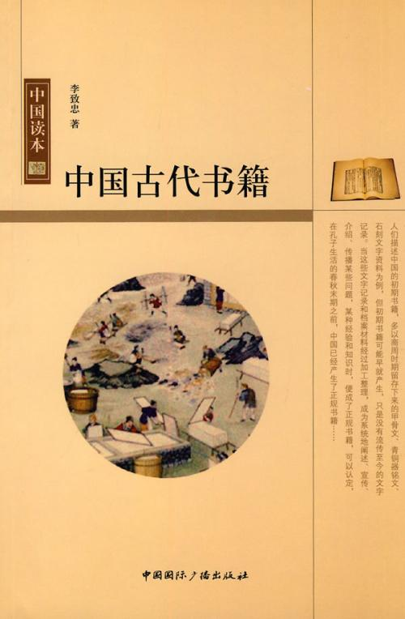
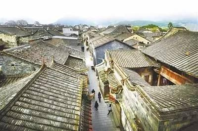

中国历史
中国历史课程是中等职业学校学生必修的一门公共基础课程。本课主要讲述从史前时期到今天以来影响中国历史发展进程的重大事件和优秀传统文化，带领学生运用唯物史观认识和分析历史现象，在不同的时空框架下理解历史上的变化与延续，帮助学生依据事实与史料对历史事物发表自己的看法，在认识中华民族多元一体的历史发展进程和探寻历史规律的过程中，进一步了解中华优秀传统文化，加强对中华民族的认同，树立正确的历史观。
学习更多

福建近代历史与文化
闽在海中 因海而兴 在近代波澜壮阔的历史中 福建有怎样独特的地理环境 又有怎样深厚的文化传承 站在历史前沿 背负特殊使命的福建人 如何走上开启民智 富国强民的艰难探索 又如何形成爱国爱乡 敢拼会赢的福建精神 请跟我们走进 福建近代历史与文化
学习更多